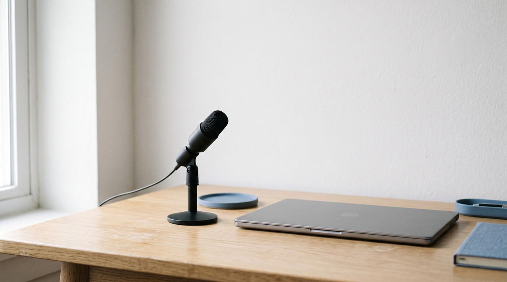
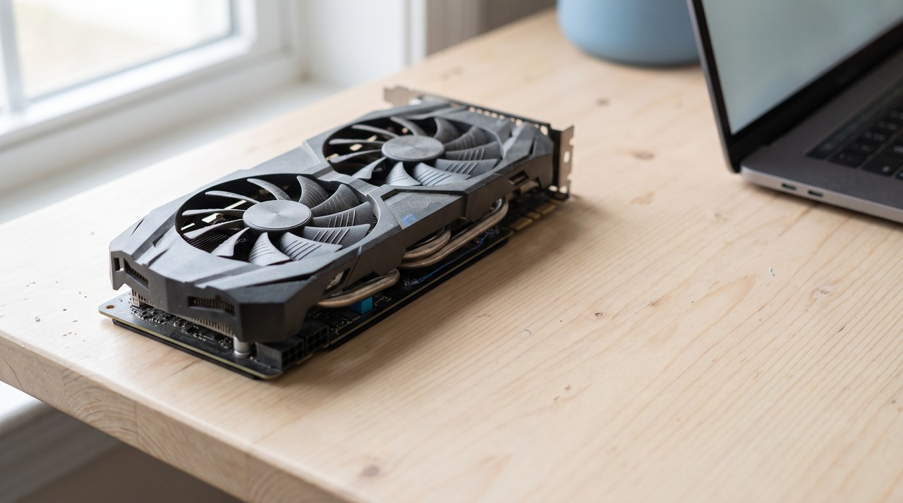

Fish Audio alternative for voice cloning: the free Fish Speech model needs a 24 GB graphics card

Fish Audio handles voice cloning online on its own servers, and its pricing page shows that commercial use begins with the Plus plan at $15 a month, or $132 a year. You can download its open models, Drama 3 and S2-Pro, without paying anything, but the official install guide asks for a Linux or WSL system with at least 48 GB and 24 GB of graphics card memory. Starting on 13 October 2026, you can use Drama 3 for business work as long as your yearly revenue stays below $500,000, while S2-Pro remains strictly for non commercial use.
| Fish Audio cloud, Free | Fish Audio cloud, Plus | Fish Speech Drama 3, self hosted | Fish Speech S2-Pro, self hosted | VoiceClone | |
|---|---|---|---|---|---|
| Price | $0 | $15 a month, or $132 a year | Free to download | Free to download | One voice free, then $49 one time |
| Selling what you make | Personal, non commercial only | Allowed, with a voice you own | Allowed while your yearly revenue is under $500,000 | Not allowed without a separate licence | Allowed, with your own voice |
| How much you can make | 8,000 credits, about 7 minutes a month | 250,000 credits, about 200 minutes a month | No limit, your own hardware | No limit, your own hardware | No limit after the license |
| What it runs on | Fish Audio's servers | Fish Audio's servers | NVIDIA card with at least 48 GB, Linux or WSL | At least 24 GB, NVIDIA card or processor, Linux or WSL | Windows 10 or 11, NVIDIA card faster, a processor works |
| Languages | 80+ | 80+ | 80+ | 80+ | English |
Written by Inam, and I built VoiceClone, which is the last column, so read this comparison knowing that I am not neutral. My other engineering work is on designesh.com. Last updated 19 October 2026.
If you looked around for an ElevenLabs alternative during this past year, you most likely ran into Fish Audio. The voices sound natural, it copies a voice from a short audio sample, and its starting paid tier costs less than what most competitors charge. The company also puts its core models on GitHub for anyone to download, so on paper it looks like you can simply run the software on your own computer and avoid the monthly subscription.
You can try that path, but running it on your own machine is not as simple as it looks. Fish Speech is free to download, but it needs a graphics card with 24 to 48 GB of memory, which almost no home PC has. The licensing rules also changed just six days ago, on 13 October 2026, which means many older posts about using the software for commercial projects are now out of date.
What do you get on Fish Audio's cloud plans?
When you look at Fish Audio's pricing page, the Free plan gives you 8,000 credits each month, which amounts to roughly 7 minutes of generated speech, along with a limit of 500 characters per run and 3 public voice slots. The FAQ on the same page explains that free accounts can only use outputs for personal, non commercial tasks. Because of that limitation, the Free tier works well for quick testing, but you cannot use it for paid client tasks or a channel that earns money.
The Plus tier costs $15 each month, or $132 if you choose to pay for a full year upfront, which brings the cost down to $11 a month. That plan gives you 250,000 credits, roughly 200 minutes of speech, 10 private voice slots, and proper permission for commercial work. Pro costs $100 a month, or $900 for the year, giving you 2,000,000 credits, while the top Max plan is $999 a month. The FAQ notes that one minute of voice output uses around 600 to 625 credits, and any unused balance disappears at the end of the month instead of rolling over.
There is an important detail here if you plan to clone your own voice for work. The FAQ states that paying members can use verified voice clones they personally own for business projects. That setup is reasonable, but it means your voice files stay on Fish Audio's cloud, and your right to sell that speech only holds while your subscription stays active.
Can you run Fish Speech for free on your own PC instead?
To be clear, the underlying models are completely genuine and public. You can inspect both of them inside the fish-speech repository on GitHub. Drama 3 is their latest main model, built as a mixture of experts design with 35 billion parameters, though it activates only 3 billion parameters for every token, which is the tiny fragment of text being processed at that moment. S2-Pro is their previous flagship model with 4 billion parameters, and the documentation explains that it can copy a person's voice using 10 to 30 seconds of sample audio.
The real difficulty comes down to the computer hardware you need. Fish Audio's own install guide asks for an NVIDIA graphics card with at least 48 GB of memory for Drama 3, and a minimum of 24 GB for S2-Pro. Graphics memory, commonly called VRAM, is the dedicated memory sitting on the card, and your system has to fit the entire model inside that memory space to run it. A standard home graphics card usually holds 8 to 12 GB, 24 GB requires an expensive card like an RTX 3090 or 4090, and reaching 48 GB generally requires a dedicated workstation card or a paid cloud server.

The setup guide also specifies that you must run Linux or WSL, which is the Linux subsystem built into Windows. You need to configure the package environment using conda or uv, pull the model files with the Hugging Face command line utility, and launch everything through terminal scripts or a local browser interface. A software developer handles these steps every day, but it is far more complicated than opening a regular desktop program.
So if your PC has a normal graphics card, the free Fish Speech route will not run well, or at all. For most people, running a lighter model built to handle a single voice is a much more practical choice, and I break down these hardware constraints in do you need a GPU for voice cloning.
What did the 13 October 2026 licence change?
Prior to this past week, these open models were distributed under the Fish Audio Research License, which prohibited commercial projects unless you got a separate agreement from Fish Audio. On 13 October 2026, the project owners switched the source code and the Drama 3 weights over to the Fish Audio Community License. The documentation notes that the older S2-Pro weights continue under the old research terms, and the S2-Pro download page still asks you to check a box confirming you will not use it for commercial work.
Under this revised licence, you are permitted to use Drama 3 for business tasks, but your annual revenue must remain below $500,000. That threshold includes the full gross earnings of you and any business you own across all revenue streams, not merely the money made directly from generated audio. If your earnings pass that mark, you must contact Fish Audio within 30 days, and you then have a 90 day grace period to arrange a paid commercial contract.
There are two additional terms you need to know about. You cannot use the model to run an online service or an API where other individuals generate voice clones, unless you buy a separate commercial agreement. In addition, whenever you share the model, or a product or service that uses it, you are required to show the phrase "Built with Fish Audio" in a clear spot for users. The distinction is straightforward: an independent worker using Drama 3 locally to produce voiceover audio for clients is covered under the revenue cap, but someone attempting to launch a public voice generation portal is not allowed to do so.
What does keeping your voice on your own PC look like?
Both ways of using Fish Audio bring practical friction, just in different ways. Using their cloud keeps your voice files on an external company server and requires an active subscription for any commercial work. Running the open models on your own computer avoids the fee, but it calls for costly graphics hardware and complex Linux commands that most creators do not want to manage.
A practical middle ground is to use a compact model designed for one clean job, which is cloning a single person's voice in one language inside a standard desktop interface. When you work this way, your original audio stays on your local hard drive, the final voice model is simply a file on your system, and the application never calls home to an external server when generating speech.
How does VoiceClone do it, and where is Fish Audio better?
I built VoiceClone as a desktop program for Windows 10 and 11 around the open source GPT-SoVITS model, which is small enough to run comfortably on a typical home PC. You start it with a single file named START VoiceClone.bat, and the app functions entirely offline without sending any of your recorded audio to the internet. You load in 1 to 3 minutes of clean speech, the program verifies the audio quality, and pressing the Make it perfect button trains the voice directly on your computer. An NVIDIA graphics card speeds up the training time, but a standard computer processor still gets there.
It is just as important to understand what the software does not do. VoiceClone works only in English, it cannot handle sung audio, and the free version allows you to clone and fully train one voice and test it across 3 audio outputs. The $49 one time license removes the length limits, adds the word editor, lets you retrain voices, and adds exports, all without an ongoing subscription.
Fish Audio handles several tasks much better, and I believe in stating those differences honestly. Their system supports over 80 languages compared to just English in my tool, it understands expression tags like whispering or laughter, it can switch between multiple speakers across a single text, and their web service runs on any browser or mobile phone. If you need many languages or many characters, Fish Audio is the stronger tool. If you need your own English voice on your own PC with no monthly bill, VoiceClone is built for that. You can download the installer from the download page, and please only clone your own voice or someone who gave you clear permission.
FAQ
Is Fish Audio free for commercial use?
On their cloud platform, Fish Audio's terms restrict free accounts to personal, non commercial use, so commercial rights require the Plus tier at $15 a month. If you self host the models, Drama 3 permits commercial projects as long as your yearly revenue is under $500,000, while S2-Pro requires a separate commercial contract.
Can I run Fish Speech on Windows?
The official documentation lists Linux and WSL as supported platforms, so Windows users have to run it through WSL or inside Docker. Your machine will also need a dedicated graphics card with at least 24 GB of memory for S2-Pro or 48 GB for Drama 3.
How much audio does Fish Audio need to clone a voice?
According to the fish-speech repository notes, S2-Pro can replicate a speaker's voice using 10 to 30 seconds of clean sample audio. Providing a longer, high quality clip still helps the model capture a natural pace and pronunciation.
What is the cheapest alternative to Fish Audio for my own voice?
Running a local tool on your existing PC avoids paying ongoing cloud costs. VoiceClone lets you clone and train a single voice without charge, and upgrading to the full English desktop tool costs a one time payment of $49.
Sources: the Fish Audio pricing page and FAQ, the fishaudio fish-speech README and LICENSE on GitHub, the Fish Audio install and inference guides, and the S2-Pro and Drama 3 model pages and licence files on Hugging Face, all read on 19 October 2026, plus the VoiceClone product page on myvoiceclones.com.
Hear your own voice come back.
The free Windows app clones and fully trains one voice, yours, on your own PC. No account, no upload, and the download starts right away.